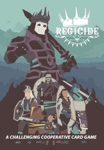

Regicide
Publishing Info
-
Published by: Badgers From Mars, TGG Games
Designed by: Paul Abrahams, Luke Badger, Andy Richdale
Artist: D.J. Phillips, Sketchgoblin
Description
Regicide is a cooperative, fantasy card game for 2 to 4 players, played using a standard deck of cards. Players work together to defeat 12 powerful enemies.
On their turn a player plays a card to the table to attack the enemy and once enough damage is dealt, the enemy is defeated. The players win when the last King is defeated.
But beware!
Each turn the enemy strikes back. Players will discard cards to satisfy the damage and if they can't discard enough, everyone loses.
Rich with tactical decisions and a deep heuristic tree, Regicide is a huge challenge for anyone who is brave enough to take it on.
—description from the designer
Game Categories
-
Categories: Card Game, Fantasy
Players: 1-4
Playing Time: 10-30 min
Age: 10+